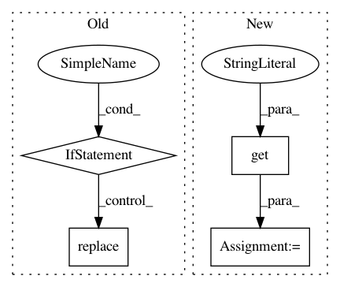

f14de2403b7255d3703d0f558d481c164080fd1e,utils/story_functions.py,,pre_process_story,#Any#,35
Before Change
// MySQL doesn"t support it.
timezone_diff = datetime.datetime.utcnow() - datetime.datetime.now()
date_published_offset = date_published.utcoffset()
if date_published_offset:
date_published = (date_published - date_published_offset
- timezone_diff).replace(tzinfo=None)
else:
date_published = date_published.replace(tzinfo=None)
entry["published"] = date_published
entry_link = entry.get("link", "")
protocol_index = entry_link.find("://")
After Change
return parsed_date, date_tuple, today_tuple, yesterday_tuple
def pre_process_story(entry):
entry["published"] = datetime.datetime(*entry.get("published_parsed", entry.get("updated_parsed", datetime.datetime.utcnow()))[:6])
entry_link = entry.get("link", "")
protocol_index = entry_link.find("://")
if protocol_index != -1:
In pattern: SUPERPATTERN
Frequency: 3
Non-data size: 4
Instances
Project Name: samuelclay/NewsBlur
Commit Name: f14de2403b7255d3703d0f558d481c164080fd1e
Time: 2010-09-16
Author: samuel@ofbrooklyn.com
File Name: utils/story_functions.py
Class Name:
Method Name: pre_process_story
Project Name: OpenNMT/OpenNMT-tf
Commit Name: f0d767eeccb697243e7f5b6fdf5570871c535ddc
Time: 2019-01-04
Author: guillaume.klein@systrangroup.com
File Name: opennmt/runner.py
Class Name: Runner
Method Name: _make_estimator
Project Name: GoogleCloudPlatform/PerfKitBenchmarker
Commit Name: 2d8bd9f10f8aec820a573238cb9eb6c82eac18ae
Time: 2015-10-30
Author: connormccoy@google.com
File Name: perfkitbenchmarker/kubernetes/kubernetes_virtual_machine.py
Class Name: KubernetesVirtualMachine
Method Name: _SetSshDetails